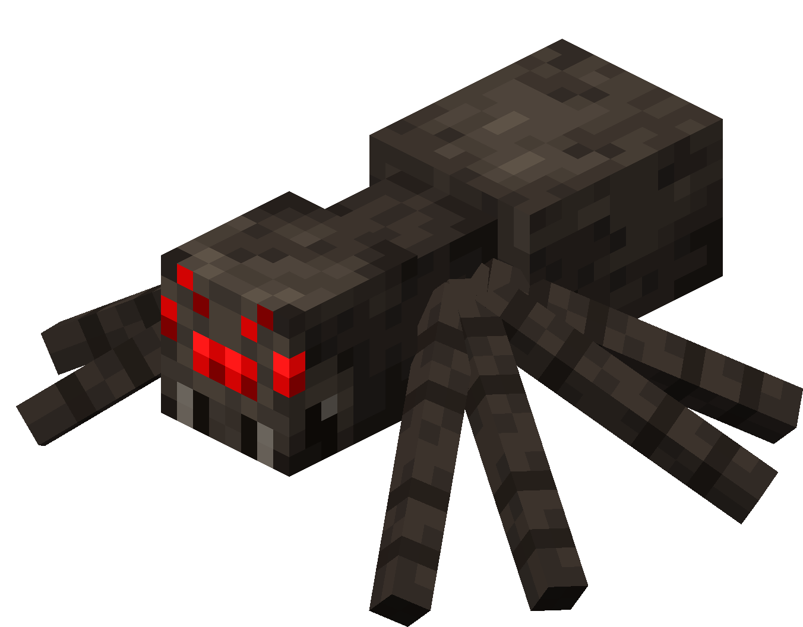

The Broodmother
Dense Jungle Boss

| Type | Spider |
|---|---|
| HP | 35 |
| Attack | 6 |
| Defense | 2 |
| Speed | 3 |
| Size | 3×3 |
| Phase 2 | ≤ 50% HP |
| Dimension | Overworld |
The Broodmother
Dense Jungle biome boss — mother of the swarm.
The Broodmother is a colossal spider that rules the Dense Jungle, deploying egg sacs across the arena to flood it with Cave Spiders. Destroy her eggs before the brood chain spirals out of control.
Abilities
- Spawn Brood: Hatches 2–3 Cave Spiders (3 HP / 2 ATK) from 3 pre-deployed egg sacs every 3 turns.
- Web Spray: Fires a 3×3 web cloud at the player — stuns for 1 turn and applies Slowness for 1 turn.
- Venomous Bite: Melee attack that applies Poison (2 dmg/turn for 3 turns).
- Pounce: Leaps up to 3 tiles, landing in a 2×2 AoE for ATK+2 damage. Telegraphed 1 turn in advance.
Phase 2 — “Nest Awakening”
Triggers at ≤ 50% HP. The Broodmother gains Speed 5 (+2) and immediately places 3 new egg sacs. Pounce range extends to 4 tiles. Web Spray also applies Poison on hit.
Strategy
Destroy the egg sacs early to cut off the brood chain. Cave Spiders stacking on top of Slowness and Poison will overwhelm you fast — letting them accumulate unchecked is the quickest way to lose.